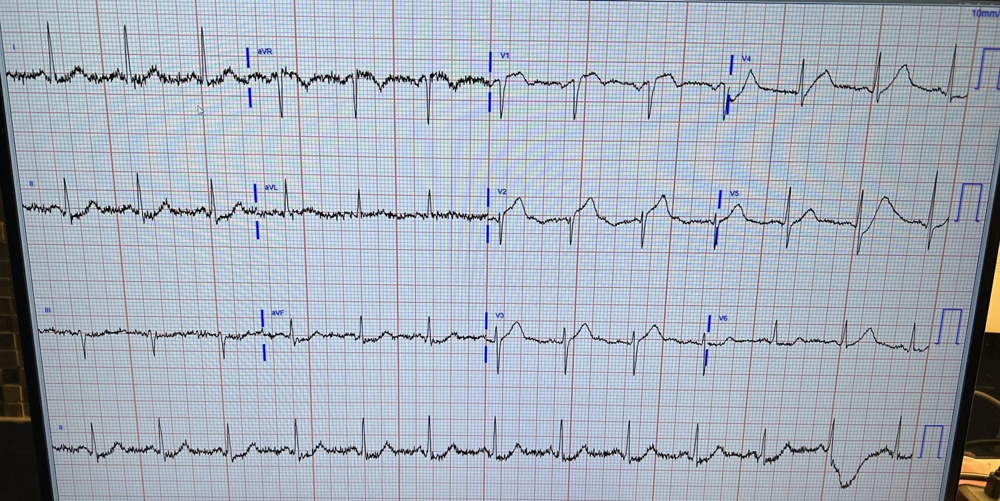
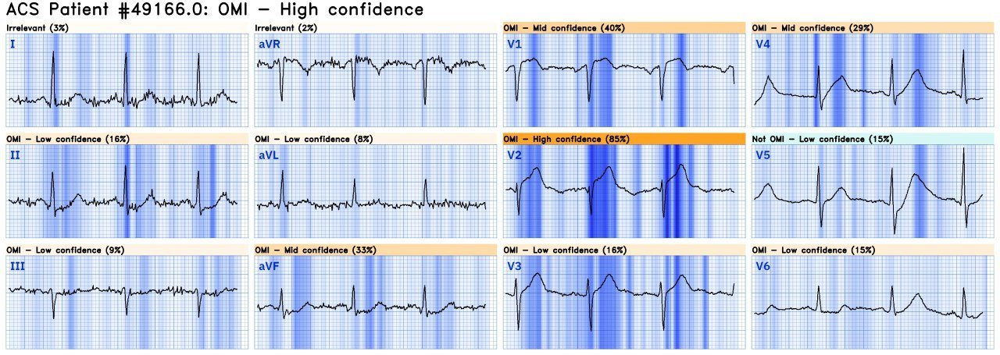
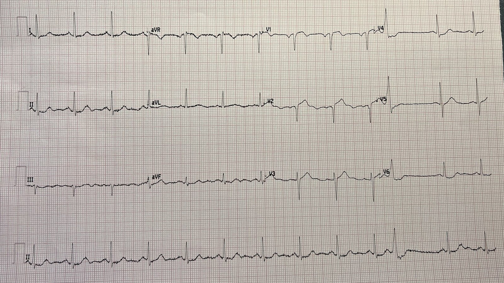
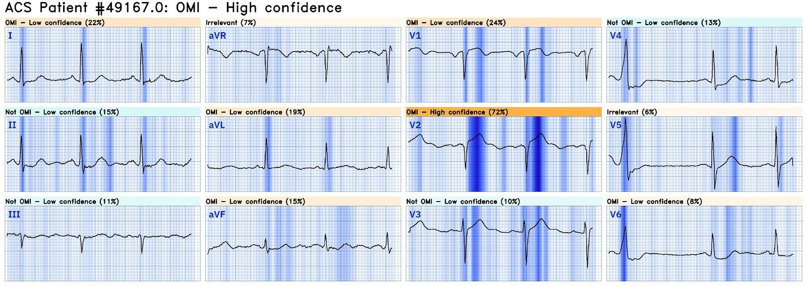
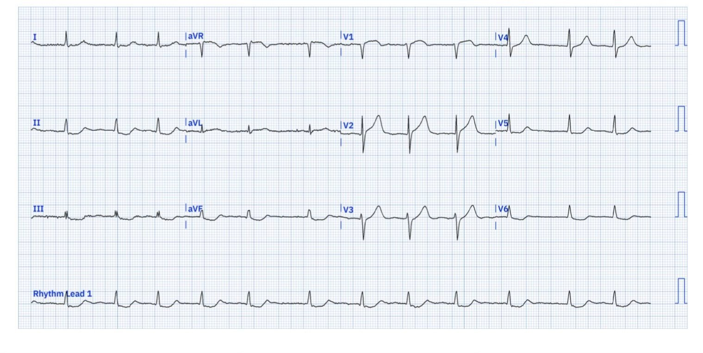
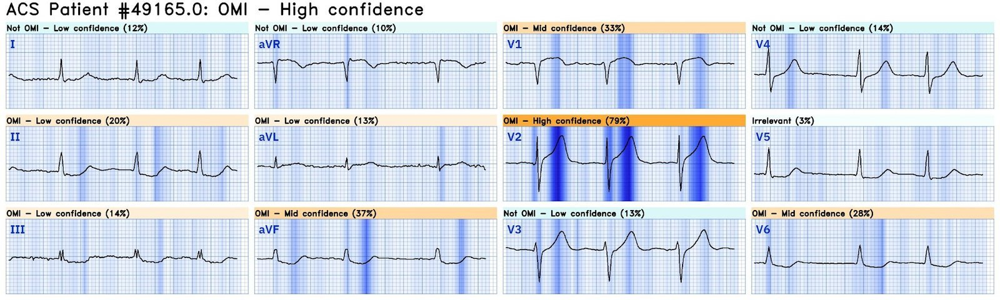
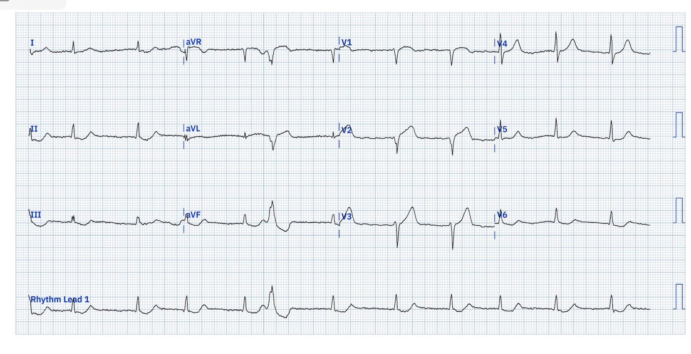
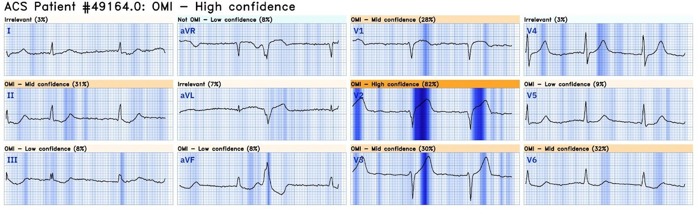
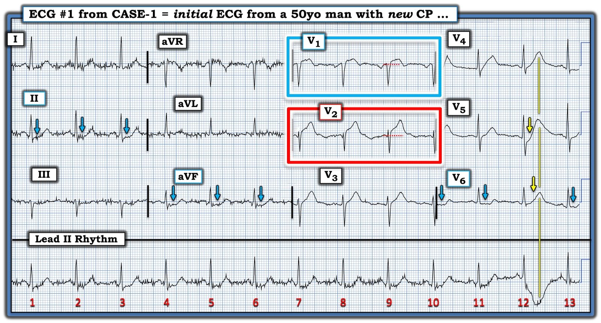
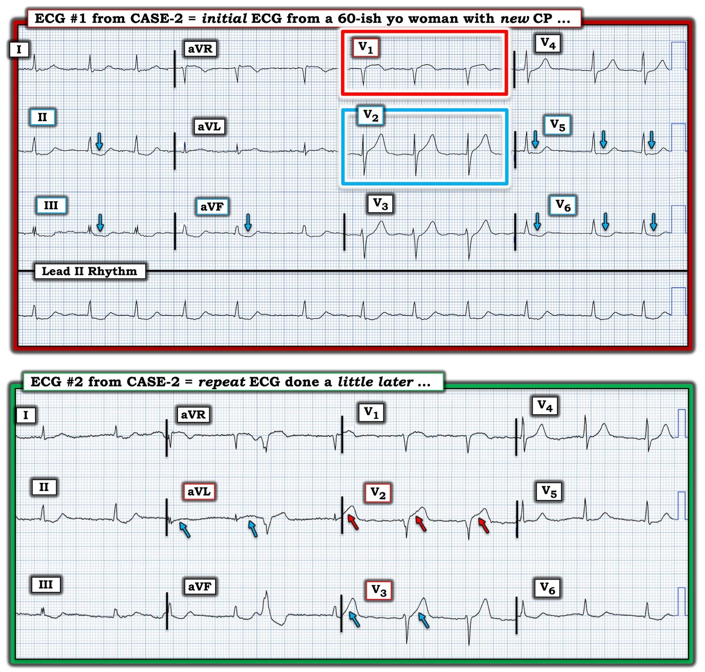

14/07/2024 — Ca nào trong hai ca này, nếu có, là OMI? Ca nào đã được chụp mạch vành cấp cứu và PCI? Ca nào lẽ ra phải được làm?
Bản dịch tiếng Việt của bài "Which of these, if either, is OMI? Which of these underwent emergent angiography and PCI? Which should have?" – Dr. Smith’s ECG Blog. Giữ nguyên toàn bộ 11 hình ảnh của bản gốc.
Người gửi giấu tên, Pendell Meyers viết bài
Ca 1:
Một người đàn ông ngoài 50 tuổi đến viện vì đau ngực cấp. Dấu hiệu sinh tồn bình thường.
Đây là điện tâm đồ của ông lúc phân loại (triage):


Đây là nhận định của QOH Phiên bản 1:


Bản ghi này chẩn đoán xác định OMI LAD cấp, với hình ảnh xoáy trước tim (Precordial Swirl). Xem bài này nếu bạn chưa biết hình ảnh đó:
Precordial Swirl — 20 cases of Swirl or Look-Alikes (Xoáy trước tim — 20 ca xoáy hoặc trông giống xoáy)
Đây là điện tâm đồ ghi lại trong vòng 20 phút (vẫn còn đau):




Phòng thông tim (cath lab) được kích hoạt, và sau đó không bị hủy, và chụp mạch vành cho thấy tổn thương thủ phạm ở LAD đoạn gần hẹp 99%, dòng chảy TIMI 2, được đặt stent trong vòng chưa đầy 90 phút kể từ khi đến viện.
Bấm vào đây để đăng ký truy cập Queen of Hearts
Ca 2:
Một phụ nữ ngoài 60 tuổi đến viện vì đau ngực cấp. Dấu hiệu sinh tồn bình thường.
Dưới đây là điện tâm đồ của bà lúc phân loại:


Ca này cũng vậy, là hình ảnh xoáy và chẩn đoán xác định tắc LAD.
QOH Phiên bản 1:


Bác sĩ đã viết:
“Troponin tăng nhẹ”
Điện tâm đồ ghi lại (bên dưới) được đọc là “Không thay đổi.”




Kết cục của ca 2?
“Nhập viện với chẩn đoán NSTEMI. Thông tim vài ngày sau cho thấy tắc hoàn toàn LAD, được đặt stent. Ngừng đo troponin trong ngày nhập viện ở mức khoảng 5.000 ng/L khi nó vẫn còn đang tăng.”
Thêm một OMI bị bỏ sót do sự phân đôi sai lầm STEMI-NonSTEMI
Đừng bỏ sót chúng!!!
Hãy dùng Queen of Hearts để cứu cơ tim và cứu mạng sống!
Bấm vào đây để đăng ký truy cập Queen of Hearts

===================================
BÌNH LUẬN CỦA TÔI, bởi KEN GRAUER, MD (14/7/2024):
===================================
Giá trị của bài viết xuất sắc hôm nay của Dr. Meyers — là nó làm nổi bật sự khác biệt về kết cục ở 2 bệnh nhân có biểu hiện tương tự (tức là đau ngực (CP) mới khởi phát do OMI LAD với hình ảnh “xoáy” trước tim) — tùy thuộc vào việc điện tâm đồ ban đầu có được đọc đúng hay không.
- Tôi tập trung bình luận vào một số chi tiết tinh tế bổ sung liên quan đến những điểm khó nhận ra khi đọc các bản ghi hôm nay.
CA #1: Một người đàn ông ngoài 50 tuổi bị CP cấp …
Để rõ ràng, trong Hình 1 — tôi đã chỉnh lại độ nghiêng và số hóa điện tâm đồ ban đầu của Ca #1. Như Dr. Meyers đã nêu — bản ghi ban đầu này chẩn đoán xác định OMI LAD cấp với hình ảnh “xoáy” trước tim (Tôi tóm tắt “Quan điểm của tôi” về cách nhận biết “xoáy” trước tim ở cuối trang trong bài ngày 15 tháng Mười năm 2022 ).
- Bệnh nhân có “xoáy” trước tim — có bằng chứng của OMI LAD cấp. Ngoài ra — còn có thiếu máu cục bộ xuyên thành ở vách, thường gặp nhất là do tắc ở đoạn gần so với nhánh xuyên vách thứ nhất của LAD.
- Bất thường nổi bật nhất trong “mắt” tôi ở Hình 1 — là ở chuyển đạo V2 (trong hình chữ nhật ĐỎ). Ở một bệnh nhân đau ngực mới xuất hiện — đơn giản là không thể nào hình dạng ST-T ở chuyển đạo V2 là bình thường. Mặc dù ST chênh lên dốc lên nhẹ thường gặp ở các chuyển đạo V2,V3 như một dấu hiệu bình thường — mức ST chênh lên tại điểm J thấy ở Hình 1 lớn hơn nhiều so với mức có thể chấp nhận là “bình thường”. Sóng ST-T ở chuyển đạo này rõ ràng là tối cấp — ở chỗ chúng “quá đầy đặn” (hypervoluminous) một cách không tương xứng (cao hơn nhiều so với mức đáng có xét theo biên độ sóng S nhỏ ở chuyển đạo V2 — đáy rộng hơn nhiều so với mức đáng có của các sóng ST-T này — và với đoạn khởi đầu ST thẳng hơn so với kiểu dốc lên nhẹ nhàng thường thấy ở một bản ghi bình thường).
- Khi có OMI LAD cấp — “xoáy“ được nhận biết bằng một bất thường ST-T đặc trưng ở các chuyển đạo V1 và V6. Hình dạng ST-T bất thường rõ rệt ở chuyển đạo V2 xác nhận rằng sóng ST-T ở chuyển đạo V1 kế cận cũng bất thường. Tức là, có một mức ST chênh lên tinh tế-nhưng-đáng kể ở chuyển đạo V1, cùng với đoạn ST dạng vòm (coving) bất thường ở chuyển đạo này.
- Trái với DSI (thiếu máu cục bộ dưới nội tâm mạc lan tỏa — Diffuse Subendocardial Ischemia) — trong đó ST chênh lên ở chuyển đạo aVR nhìn chung nhiều hơn bất kỳ mức ST chênh lên nào có thể thấy ở chuyển đạo V1 — thì với xoáy trước tim ta thấy điều ngược lại. Vì vậy, dù có nhiễu rõ ở các chuyển đạo chi trong Hình 1 — đoạn ST dạng vòm và chênh lên ở chuyển đạo V1 nổi bật hơn mức ST chênh lên nhẹ ở chuyển đạo aVR, với hình thái ở chuyển đạo V1 đặc trưng cho “xoáy”.
- Việc nhận biết thiếu máu cục bộ xuyên thành ở vách với “xoáy” được xác nhận ở Ca #1 bởi thay đổi ST-T soi gương thấy ở chuyển đạo V6, nơi cho thấy đoạn ST tương đối thẳng đuỗn và chênh xuống (các mũi tên XANH ở chuyển đạo V6).
- Bằng chứng hỗ trợ cho OMI LAD đoạn gần — đến từ ST chênh xuống soi gương ở ít nhất 2 chuyển đạo thành dưới (các mũi tên XANH ở các chuyển đạo II và aVF).
ĐIỂM THEN CHỐT (PEARL) #1: Lưu ý rằng ta thấy 3 phức bộ QRS ở các chuyển đạo ghi đồng thời V4,V5,V6. Chẳng phải sóng ST-T của phức bộ QRS ở giữa có hình thái rất khác với sóng ST-T của phức bộ QRS thứ 1 ở các chuyển đạo này sao? Hình ảnh “xoáy” trước tim không thể được chẩn đoán nếu hình thái ST-T của phức bộ QRS ở giữa là thật — vì khi đó không có ST chênh xuống dẹt ở chuyển đạo V6.
- MẤU CHỐT là nhận ra rằng dải nhịp chuyển đạo II dài cũng được ghi đồng thời. Hãy chú ý chỗ lõm xuống và biến dạng kỳ lạ của sóng ST-T ở nhát #12 trên chuyển đạo II dài. Đây rõ ràng là nhiễu — và nó cho ta biết cần bỏ qua sóng ST-T của nhát ở giữa trên các chuyển đạo ghi đồng thời V4,V5,V6.
ĐIỀU CỐT LÕI của CA #1:
Việc nhận biết kịp thời hình ảnh “xoáy” trước tim của OMI LAD cấp đã giúp tái tưới máu bằng stent trong vòng chưa đầy 90 phút kể từ lúc đến khoa cấp cứu (ED).
- Đọc điện tâm đồ kịp thời, chính xác cứu cơ tim!


=======================================
CA #2: Một phụ nữ ngoài 60 tuổi bị CP cấp …
Để dễ so sánh — tôi đã đánh nhãn cả hai bản ghi của Ca #2, và đặt chúng cạnh nhau trong Hình 2.
- Điện tâm đồ #1 của Ca #2 được các bác sĩ đọc là “ST chênh xuống nhẹ”.
- Điện tâm đồ #2 của Ca #2 — được so với điện tâm đồ #1, và được các bác sĩ đọc là “Không thay đổi”.
ĐIỀU CỐT LÕI của CA #2:
Như Dr. Meyers đã nêu (và như QOH đánh giá) — các điện tâm đồ của Ca #2 một lần nữa chẩn đoán xác định OMI LAD cấp với hình ảnh “xoáy” trước tim. Nhận định này được xác nhận bởi troponin tăng rõ và bởi kết quả thông tim sau cùng (thực hiện vài ngày sau) cho thấy tắc hoàn toàn LAD.
- Đọc điện tâm đồ không chính xác ở bệnh nhân đau ngực mới xuất hiện — dẫn đến mất phần cơ tim lẽ ra đã có thể cứu được.
- Không nhận ra những hạn chế của bản thân trong khả năng đọc điện tâm đồ + không cân nhắc dùng QOH hỗ trợ — làm chậm chẩn đoán và làm tăng lượng cơ tim bị mất. Cuối cùng, Ca #2 cũng được thông tim, với đặt stent tổn thương “thủ phạm” ở LAD. Đáng tiếc là — việc này diễn ra quá muộn để đạt lợi ích tối ưu.
Có thể học được gì từ CA #2?
Nhịp trên cả hai bản ghi của Ca #2 là AFib với đáp ứng thất được kiểm soát (có một PVC ở bản ghi thứ 2).
- Chúng ta không được cho biết LIỆU AFib này là mới (do hậu quả của OMI LAD cấp) — hay AFib là nhịp đã có từ lâu của bệnh nhân này (chúng ta cũng không được cho biết bệnh nhân có đang dùng thuốc chống đông hay thuốc làm chậm tần số hay không). Có lẽ AFib không phải là nhịp mới — vì AFib mới khởi phát thường đi kèm đáp ứng thất nhanh.
- LƯU Ý: Điều quan trọng là xác định AFib là mới hay cũ — vì OMI LAD cấp gây ra AFib mới có tiên lượng đi kèm diễn tiến nặng hơn và kết cục xấu hơn. Trong khi AFib mới xuất hiện do hậu quả của OMI LAD cấp có thể cần sốc điện chuyển nhịp ngay — thì AFib đã có từ lâu với đáp ứng thất được kiểm soát nhiều khả năng hơn hẳn là không cần điều trị đặc hiệu nào.
Điện tâm đồ #1 trong CA #2:
- Bất thường nổi bật nhất trong “mắt” tôi ở Hình 2 — thấy ở chuyển đạo V1 (trong hình chữ nhật ĐỎ). Ở một bệnh nhân đau ngực mới — đơn giản là không thể nào hình dạng ST-T ở chuyển đạo V1 lại bình thường. Mặc dù mức ST chênh lên ở chuyển đạo này là tối thiểu — hình dạng vòm của đoạn ST ở chuyển đạo V1 rõ ràng là bất thường (và đặc trưng cho hình dạng “Swirl” ở chuyển đạo V1 — ở đây thấy kèm phần cuối sóng T đảo ngược kín đáo).
- Tôi thấy thú vị là hình dạng của sóng ST-T ở chuyển đạo kế bên V2 (trong hình chữ nhật XANH) khác hẳn hình dạng sóng ST-T ở chuyển đạo V1. Vì chúng ta biết sóng ST-T ở chuyển đạo V1 là bất thường — sóng ST-T ở chuyển đạo V2 “đồ sộ” hơn mức đáng có (tối cấp!), nhất là khi xét biên độ rất khiêm tốn của sóng S ở chuyển đạo V2 này.
- Ủng hộ cho các dấu hiệu điện tâm đồ ở V1,V2 chỉ điểm OMI LAD đoạn gần này — là sóng ST-T chênh xuống soi gương ở từng chuyển đạo thành dưới (mũi tên XANH ở các chuyển đạo II,III,aVF).
- Trong bối cảnh này — ST chênh xuống ở các chuyển đạo V5 và V6 thỏa tiêu chuẩn “Swirl” trước tim (với ST chênh xuống dạng dẹt ở V5 — và ST chênh xuống dạng lõm ở V6, cho thấy 2 hình dạng sóng ST-T đặc trưng của Swirl).
Sai lầm lộ liễu nhất trong CA #2:
Ở một bệnh nhân đau ngực mới — tổng hợp các dấu hiệu ở những chuyển đạo nêu bật trên đây là chẩn đoán OMI LAD cấp với “Swirl” trước tim. Dù vậy — các dấu hiệu trên điện tâm đồ #1 có phần tinh tế, đến mức người đọc có thể chưa chắc chắn về chẩn đoán từ bản ghi ban đầu này.
- NẾU còn chút nào không chắc chắn — bước tiếp theo rất DỄ. Chỉ cần ghi lại điện tâm đồ trong vòng không quá khoảng 10-20 phút. Chúng ta không được cho biết bao lâu đã trôi qua giữa lúc ghi 2 điện tâm đồ này ở Ca #2 — nhưng xét theo cách người đọc diễn giải điện tâm đồ #1 ( = ST chênh xuống “nhẹ”) — nhiều khả năng khoảng cách giữa hai bản ghi dài hơn 10-20 phút rất nhiều.
ĐIỂM THEN CHỐT #2: Cách TỐT NHẤT và tiết kiệm thời gian nhất để so sánh các điện tâm đồ liên tiếp — là đặt hai bản ghi cạnh nhau (như trong Hình 2) — rồi so sánh 2 điện tâm đồ từng chuyển đạo một.
- Việc so sánh cạnh nhau điện tâm đồ #1 và điện tâm đồ #2 rõ ràng đã không được thực hiện trong ca hôm nay — vì nếu có, không thể nào người đọc lại không nhận thấy: i) Mất sóng R ở các chuyển đạo V2 và V3 — so với biên độ sóng R ở các chuyển đạo này trên điện tâm đồ ban đầu; và, ii) Thay đổi hình dạng đoạn khởi đầu ST ở chuyển đạo V2 so với đoạn ST dạng dốc lên ở V2 của điện tâm đồ ban đầu (mũi tên ĐỎ nêu bật đoạn khởi đầu ST thẳng đuỗn rõ ràng ở chuyển đạo V2 của điện tâm đồ #2 — và sóng ST-T không tương xứng rõ rệt hơn nhiều trên bản ghi lại này).
- ĐIỂM THEN CHỐT #3: Lưu ý thời điểm chuyển kênh giữa các chuyển đạo aVR,L,F và V1,2,3 ở điện tâm đồ #2 — khiến đoạn ST (mũi tên ĐỎ thứ 1) là của chuyển đạo V2. Thấy đoạn ST thẳng đuỗn ở cả 3 sóng ST-T trong chuyển đạo V2 này — khẳng định đây là dấu hiệu “thật”. ĐIỂM THEN CHỐT ở đây — là nhận ra rằng đôi khi các manh mối quan trọng bị “giấu kín” ở chỗ chuyển kênh, nơi có thể chia tách phức bộ thành phần QRS thuộc 3 chuyển đạo đầu (ngay trước chỗ chuyển kênh) — và phần đoạn ST thuộc 3 chuyển đạo kế tiếp (ngay sau chỗ chuyển kênh).
- LƯU Ý: Rất dễ nghĩ rằng “không có khác biệt” giữa sóng ST-T ở chuyển đạo V3 của điện tâm đồ #1 và điện tâm đồ #2 nếu xem riêng từng bản ghi. Đây chính là lý do việc so sánh các điện tâm đồ liên tiếp cần được thực hiện bằng cách xem từng chuyển đạo một. Các mũi tên XANH ở chuyển đạo V3 của điện tâm đồ #2 nêu bật rằng đoạn khởi đầu ST đã thẳng hơn và sóng T không tương xứng hơn trên bản ghi lại này!
- Cuối cùng — các mũi tên XANH ở chuyển đạo aVL của điện tâm đồ #2 giờ đây cho thấy không thể nhầm lẫn ST dạng vòm và chênh lên nhẹ, điều không thấy rõ trên điện tâm đồ #1. Đây là một thay đổi có ý nghĩa — vì ST chênh lên ở chuyển đạo aVL là dấu hiệu đặc trưng của OMI LAD đoạn gần.
- KẾT LUẬN: Ở một bệnh nhân đau ngực mới — Mọi nghi ngờ có thể còn sau khi đánh giá điện tâm đồ #1 — lẽ ra phải được xóa bỏ sau khi so sánh từng chuyển đạo một với điện tâm đồ #2.

